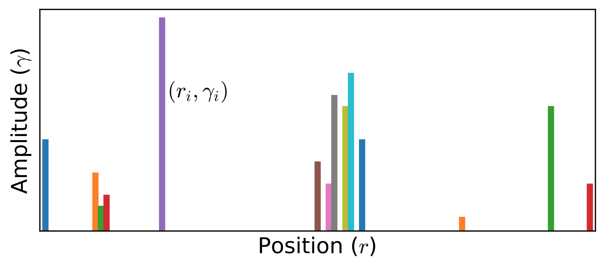

Stochastic Analytic Continuation 2
In principle, for given Green's function $G$, there exists infinitely many spectral densities $A(\omega)$ that can be used to reproduce $G$ via $\mathbf{G} = \mathbf{KA}$. The maximum entropy method tries to pick up the most likely spectral function which maximizes $P[A|\bar{G}]$ (It actually maximizes $Q$). Here, we would like to introduce an alternative approach, namely the stochastic analytic continuation. It is argued that the weights for all the possible spectral densities are the same if they can give rise to the same $\chi^2$. At first, a sequence of spectral densities will be generated by stochastic method. Then an unbiased thermal average of all possible spectra, Boltzmann weighted according to goodness-of-fit function $\chi^{2}$, produces an average spectrum. Thus sometimes the method was named as average spectrum method or stochastic sampling method in the references. There are several variants for the stochastic analytic continuation. Next we will introduce two representative algorithms as proposed by A. W. Sandvik and K. S. D. Beach, respectively.
Beach's Algorithm
K. S. D. Beach proposed another variant of stochastic analytic continuation in 2004. In his approach, the analytic continuation problem is mapped into a system of interacting classic fields at first. Then the classic field is sampled using Monte Carlo method to obtain the final solution. He concluded that the maximum entropy method is simply the mean field limit of the stochastic analytic continuation. Next, this algorithm will be explained concisely.
Classic Fields
Recalled that the goodness-of-fit functional $\chi^{2}[A]$ measures how closely the Green's function generated from $A(\omega)$ matches the raw input data. Its expression is rewritten as follows:
\[\begin{equation} \chi^{2}[A] = \int^{\beta}_{0} \frac{1}{\sigma(\tau)^2} \left|\int d\omega~K(\tau,\omega) A(\omega) - \bar{G}(\tau)\right|^2 d\tau. \end{equation}\]
At first, a new variable $x$ is introduced. The relation between $x$ and $\omega$ is:
\[\begin{equation} x = \phi(\omega) = \int^{\omega}_{-\infty} d\omega'~m(\omega'), \end{equation}\]
where $m(\omega)$ denotes default model function. Clearly, the $\phi(\omega)$ function defines a smooth mapping from $\mathbf{R} \to [0,1]$. Since $\omega = \phi^{-1}(x)$, a dimensionless classic field $n(x)$ is created:
\[\begin{equation} n(x) = \frac{A(\phi^{-1}(x))}{m(\phi^{-1}(x))}. \end{equation}\]
It is easy to prove that both $n(x)$ and $A(\omega)$ obey similar normalization condition:
\[\begin{equation} \int d\omega~A(\omega) = \int^{1}_0 dx~n(x) = 1. \end{equation}\]
Next, in analogy with the goodness-of-fit functional $\chi^2[A]$, the Hamiltonian for the system of classic field $\{n(x)\}$ can be defined as follows:
\[\begin{equation} H[n(x)] = \int^{\beta}_0 \frac{d\tau}{\sigma(\tau)^2} \left| \int^{1}_0 dx~K(\tau,x) n(x) - \bar{G}(\tau) \right|. \end{equation}\]
Supposing $\alpha$ is an inverse temperature of the system, then the partition function $Z$ is:
\[\begin{equation} Z = \int \mathcal{D}n~e^{-\alpha H[n]}, \end{equation}\]
where
\[\begin{equation} \int \mathcal{D}n = \int^{\infty}_0 \left[\prod_x dn(x)\right] \delta\left(\int^{1}_0 dx~n(x) - 1\right). \end{equation}\]
The thermally averaged value of the classic field is:
\[\begin{equation} \langle n(x) \rangle = \frac{1}{Z} \int \mathcal{D}n~n(x) e^{-\alpha H[n]}. \end{equation}\]
Finally, according to the definition of the classic field, the averaged spectral density $\langle A(\omega) \rangle$ can be expressed as:
\[\begin{equation} \langle A(\omega) \rangle = \langle n(\phi(\omega)) \rangle m(\omega). \end{equation}\]
So, by introducing the classic field $\{n(x)\}$, the analytic continuation problem is converted into a statistical sampling of the classic field, which is easily solved by using the Monte Carlo method.
Monte Carlo Sampling
Next we clarify how to sample the classic field. Similar to Sandvik's algorithm, $n(x)$ is parameterized as a superposition of many $\delta$ functions (see Fig.1 for schematic diagram):
\[\begin{equation} n_{\mathcal{C}} (x) = \sum_i \gamma_i \delta(x - r_i), \end{equation}\]
where $\gamma_i$ and $r_i$ denote amplitude (weight) and position of the $i$-th $\delta$ function, respectively. And $\mathcal{C}$ means a configuration space formed by a set of $r_i$ and $\gamma_i$,
\[\begin{equation} \mathcal{C} = \{r_i, \gamma_i\}. \end{equation}\]
Note that $\gamma_i$ and $r_i$ satisfy the following constraints:
\[\begin{equation} \forall i,~\gamma_i > 0,~\sum_i \gamma_i = 1,~ 0 \le r_i \le 1. \end{equation}\]
Supposed that there is a transition from $\mathcal{C}$ to $\mathcal{C}'$ ($\{r_i, \gamma_i\} \to \{r'_i, \gamma'_i\}$):
\[\begin{equation} r_i \to r'_i = r_i + \sum_{\lambda \in \Lambda} \delta_{i\lambda} \Delta r_{\lambda}, \end{equation}\]
\[\begin{equation} \gamma_i \to \gamma'_i = \gamma_i + \sum_{\lambda \in \Lambda} \delta_{i\lambda} \Delta \gamma_{\lambda}, \end{equation}\]
where $\Lambda$ means a subset of the $\delta$ functions, then the Hamiltonian of the system is changed from $H_{\mathcal{C}}$ to $H_{\mathcal{C}'}$. According to Eq.(5), $H_\mathcal{C}$, $H_{\mathcal{C}'}$, and their difference $\Delta H$ can be calculated by:
\[\begin{equation} H_{\mathcal{C}} = \int^{\beta}_0 d\tau~h_{\mathcal{C}}(\tau)^2, \end{equation}\]
\[\begin{equation} H_{\mathcal{C}'} = \int^{\beta}_0 d\tau \left[h_{\mathcal{C}}(\tau) + \Delta h(\tau)\right]^2, \end{equation}\]
\[\begin{equation} \Delta H = H_{\mathcal{C}'} - H_{\mathcal{C}} = \int^{\beta}_0 d\tau~\Delta h(\tau) [2h_{\mathcal{C}}(\tau) + \Delta h(\tau)]. \end{equation}\]
Here,
\[\begin{equation} h(\tau) = \frac{1}{\sigma(\tau)} \left[\int^1_0 dx~K(\tau, x)n(x) - \bar{G}(\tau)\right], \end{equation}\]
and
\[\begin{equation} \Delta h(\tau) = \frac{1}{\sigma(\tau)} \sum_{\lambda \in \Lambda} \left[ \gamma'_{\lambda} K(\tau,r'_{\lambda}) - \gamma_{\lambda} K(\tau,r_{\lambda}) \right]. \end{equation}\]
Finally, the transition probability from $\mathcal{C}$ to $\mathcal{C}'$ reads
\[\begin{equation} p(C \to C') = \exp(-\alpha \Delta H). \end{equation}\]

Figure 1 | Typical Monte Carlo field configurations for stochastic analytic continuation (K. S. D. Beach's version). Note that the amplitudes $\{\gamma_i\}$ of all the $\delta$ functions are not identical. Both amplitudes $\{\gamma_i\}$ and positions $\{r_i\}$ ($0.0 < r_i < 1.0$) can be sampled by Monte Carlo method.
Parallel Tempering
The parallel tempering trick is adopted to improve the Monte Carlo algorithm as described above. It is possible to proceed multiple simulations simultaneously for a sequence of inverse temperature parameters $\{\alpha_1, \alpha_2, \cdots, \alpha_N \}$. The ratio for two adjacent $\alpha$ parameters is a constant: $\alpha_{p+1} / \alpha_p = R$. Note that the field configurations in all simulations evolve in parallel but not independently. We can swap the field configurations between two adjacent layers. Of course, the detailed balance is always preserved, and each simulation will eventually settle into thermal equilibrium at given $\alpha$. The transition probability of such a global Monte Carlo update is:
\[\begin{equation} p(\mathcal{C} \to \mathcal{C}') = \exp[(\alpha_p - \alpha_q)(H_{p} - H_{q})], \end{equation}\]
where $p$ and $q$ are layer indices, and $p = q \pm 1$. Parallel tempering eliminates the need for an initial annealing stage. Another advantage of parallel tempering is that it yields a complete temperature profile of all the important thermodynamic variables (such as specific heat and internal energy), which can be used to estimate the critical $\alpha$ and final spectral function $\langle A(\omega) \rangle$.
Critical Inverse Temperature
Clearly, $\langle n(x) \rangle$ strongly depends on the inverse temperature $\alpha$. How to use these $\alpha$-dependent $\langle n(x) \rangle$ to construct the final spectral function? Beach proposed a new algorithm. During parallel tempering process, the internal energy of the system is also measured in addition to $\langle n(x) \rangle$:
\[\begin{equation} U(\alpha_p) = \langle H [n] \rangle_{\alpha_p}. \end{equation}\]
Let us plot $\log_{10}[U(\alpha)]$ as a function of $\log_{10} (\alpha)$. We find that $\log_{10}[U(\alpha)]$ drops quickly at first when $\log_{10} (\alpha)$ increases, and then it approaches to a constant value slowly. The knee in $\log_{10}[U(\alpha)]$ function, occurring in the vicinity of $\alpha = \alpha^*$ (the corresponding layer index $p = p^{*}$), signals a jump in specific heat (a thermodynamic phase transition). Then the averaged spectral function is constructed by:
\[\begin{equation} \langle \langle n(x) \rangle \rangle = \frac{\sum^{N-1}_{p = p*} [U(\alpha_p) - U(\alpha_{p+1})] \langle n(x) \rangle_{\alpha_p}} {U(\alpha_{p*}) - U(\alpha_N)}, \end{equation}\]
where $N$ is the total number of $\alpha$, and $\alpha_{p*}$ ($\equiv \alpha^{*}$) is the critical inverse temperature.
Likelihood Function
Neither of the Sandvik's and Beach's algorithms needs extra entropic term to regulate spectral density. All the stochastically generated spectra are treated on the same footing. Thus, the calculated spectral function retains more subtle structures than that obtained by the maximum entropy method. Actually, in stochastic analytic continuation,
\[\begin{equation} \langle A \rangle = \int \mathcal{D} A~P[A|\bar{G}] A. \end{equation}\]
The weight of the candidate spectral function $A$ is given by the likelihood function $P[A|\bar{G}]$. Eq.(20) can be viewed as likelihood functions in stochastic analytic continuation.
Relevant parameters
See [StochAC] Block